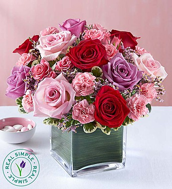

Rose Carnation with Limonium
Origin of Rose Carnation
Roses are primarily native to Asia, with some species originating in Europe, North America, and
Northwest Africa. Carnations, scientifically known as Dianthus caryophyllus, are native to the
Mediterranean region and have been cultivated forover 2,000 years. Both flowers have spread
globally, becoming essential elements in floral arrangements.
Origin of Limonium
Limonium, commonly known as statice or sea lavender, originates from the Mediterranean region, including
parts of Europe, Asia, and Africa. It thrives in coastal areas and salt marshes. Known for its
long-lasting blooms, Limonium is widely used in both fresh and dried floral arrangements.